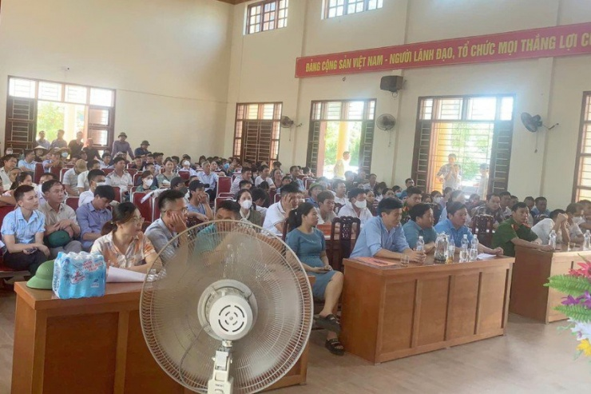
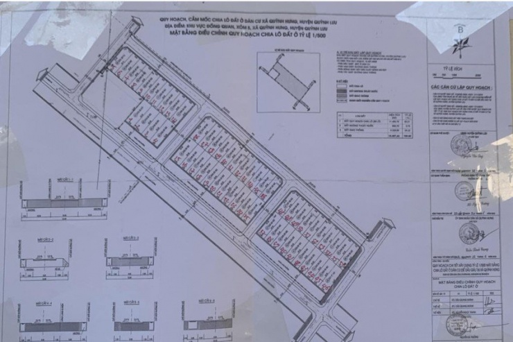

Em trai phó chủ tịch huyện đấu giá trúng 23 lô đất
Sự kiện:
Tin nóngNgười đấu giá trúng 23 lô đất tại vùng Đồng Quan (xóm 5, xã Quỳnh Hưng, huyện Quỳnh Lưu, tỉnh Nghệ An) là em trai phó chủ tịch huyện.
Những ngày qua, người dân xôn xao vụ việc ông Nguyễn Văn Trọng (công chức kế toán UBND xã Quỳnh Bá, huyện Quỳnh Lưu, Nghệ An) trúng đấu giá 23 lô đất với tổng trị giá lên tới 30 tỉ đồng.
Rất đông người dân đến tham gia đấu giá đất ở khu vực Đồng Quan, xã Quỳnh Hưng. Ảnh: Thông tin Quỳnh Hưng.
Ông Trọng là em trai của ông Nguyễn Văn Quý (Phó Chủ tịch UBND huyện Quỳnh Lưu) - người ký duyệt giá đất của 56 lô đất đấu giá ở tại vùng Đồng Quan (xóm 5, xã Quỳnh Hưng, huyện Quỳnh Lưu). Trong 56 lô đem ra đấu giá thì ông Trọng trúng tới 23 lô. Khi tham gia đấu giá, ông Trọng bỏ giá cao hơn người dân mỗi lô khoảng từ 300 đến 800 triệu đồng.
Người thay mặt Chủ tịch UBND huyện Quỳnh Lưu ký quyết định phê duyệt giá đất cụ thể, giá khởi điểm để đấu giá quyền sử dụng đất ở tại vùng Đồng Quan xã Quỳnh Hưng là ông Nguyễn Văn Quý (anh trai ông Trọng).
Cuộc đấu giá trên đã thực hiện với 56 lô đất ở giá khởi điểm gần 60 tỉ đồng.
Các lô đất trên bản vẽ quy hoạch, cắm mốc.
Mặc dù đấu giá trúng 23 lô đất ở nhưng ông Trọng - người tham gia đấu giá - là em ruột của ông Quý cho thấy kết quả đấu 23 lô đất đó đã vi phạm vào Điều 38, Luật đấu giá tài sản năm 2016.
Chiều 9-7, trả lời báo chí, ông Trọng cho biết, ông Trọng có người cháu làm doanh nghiệp do bị ốm không về tham gia đấu giá được nên nhờ ông Trọng đứng tên tham gia đấu 23 lô đất trên. Khi nhận thông báo, ông Trọng mua hồ sơ, nộp tiền cọc đấu giá các lô đất đã không đọc các quy định đấu giá.
Được biết, UBND huyện Quỳnh Lưu đã làm thủ tục hủy kết quả trúng đấu giá 23 lô đất nêu trên.
Điều 38 (Đăng ký tham gia đấu giá) của Luật đấu giá tài sản:
1. Cá nhân, tổ chức đăng ký tham gia đấu giá thông qua việc nộp hồ sơ tham gia đấu giá hợp lệ và tiền đặt trước cho tổ chức đấu giá tài sản theo quy định của Luật này và quy định khác của pháp luật có liên quan. Trong trường hợp pháp luật có quy định về điều kiện khi tham gia đấu giá thì người tham gia đấu giá phải đáp ứng điều kiện đó. Người tham gia đấu giá có thể ủy quyền bằng văn bản cho người khác thay mặt mình tham gia đấu giá.
2. Tổ chức đấu giá tài sản bán hồ sơ tham gia đấu giá, tiếp nhận hồ sơ tham gia đấu giá trong giờ hành chính, liên tục kể từ ngày niêm yết việc đấu giá tài sản cho đến trước ngày mở cuộc đấu giá 2 ngày.
3. Ngoài các điều kiện đăng ký tham gia đấu giá quy định tại Luật này và pháp luật có liên quan, người có tài sản đấu giá, tổ chức đấu giá tài sản không được đặt thêm yêu cầu, điều kiện đối với người tham gia đấu giá.
4. Những người sau đây không được đăng ký tham gia đấu giá:
a. Người không có năng lực hành vi dân sự, người bị mất hoặc bị hạn chế năng lực hành vi dân sự, người có khó khăn trong nhận thức, làm chủ hành vi hoặc người tại thời điểm đăng ký tham gia đấu giá không nhận thức, làm chủ được hành vi của mình;
b. Người làm việc trong tổ chức đấu giá tài sản thực hiện cuộc đấu giá; cha, mẹ, vợ, chồng, con, anh ruột, chị ruột, em ruột của đấu giá viên điều hành cuộc đấu giá; người trực tiếp giám định, định giá tài sản; cha, mẹ, vợ, chồng, con, anh ruột, chị ruột, em ruột của người trực tiếp giám định, định giá tài sản;
c. Người được chủ sở hữu tài sản ủy quyền xử lý tài sản, người có quyền quyết định bán tài sản, người ký hợp đồng dịch vụ đấu giá tài sản, người có quyền quyết định bán tài sản của người khác theo quy định của pháp luật;
d. Cha, mẹ, vợ, chồng, con, anh ruột, chị ruột, em ruột của người quy định tại điểm c khoản này;
đ. Người không có quyền mua tài sản đấu giá theo quy định của pháp luật áp dụng đối với loại tài sản đó.
Nguồn: https://plo.vn/em-trai-pho-chu-tich-huyen-dau-gia-trung-23-lo-dat-post741517.html